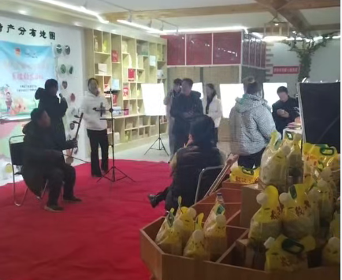

为帮助本地农户掌握电商直播技能，打通农产品线上销售新渠道，近日，赤峰市启跃文化传媒有限公司在宁城县特色农产品直播间开展乡村电商直播技能培训活动，手把手教农户玩转直播带货，让老百姓自己当主播、为家乡特产代言，用数字力量激活乡村增收新动能。
活动现场设置了专业直播场景，背景的“宁城县特产分布地图”与琳琅满目的本地农特产品（葵花油、杂粮、干货等），直观展现了宁城丰富的物产资源。启跃传媒的专业讲师团队采用“理论讲解+实战演练”的沉浸式教学模式，围绕直播设备操作、产品介绍话术、镜头表现技巧、粉丝互动技巧、线上订单处理等内容进行细致教学，从基础操作到进阶运营，为农户搭建起从“零基础”到“会直播”的快速通道。
在实操环节，农户们轮流走上直播岗位，对着镜头介绍家乡的优质农产品。面对镜头时，有的农户略显紧张，在讲师的指导下，逐渐放松下来，用朴实的语言讲述农产品的种植故事与品质优势；现场还设置了文艺互动环节，以二胡演奏等特色形式丰富直播内容，增添直播间烟火气与文化氛围，探索“农产+文旅”的直播新形式。不少农户表示，以前觉得直播是年轻人的事，没想到自己也能站在镜头前为家乡产品带货，学到的技能让他们对农产品的销路更有信心了。
此次培训聚焦宁城县本地农户的实际需求，依托启跃传媒在直播电商领域的资源优势，不仅解决了农户“不会播、不敢播”的难题，更搭建起农户与线上市场的直接桥梁。培训以“授人以渔”的方式，帮助农户掌握可持续的电商技能，让他们成为家乡农产品的“代言人”，从“被动等待收购”转向“主动线上拓销”，有效拓宽农产品销售半径，提升产品溢价能力。
赤峰市启跃文化传媒有限公司负责人表示，未来，公司必将把这份关怀与厚爱转化为砥砺奋进、再创佳绩的强大动力，持续做强做优直播电商核心业务，充分发挥平台优势、人才优势与资源优势，以更坚定的初心、更务实的举措、更优质的服务践行企业使命，积极投身地方经济建设与乡村振兴事业，用实实在在的业绩回馈各级政府与广大群众的信任与支持，为推动县域经济高质量发展、绘就乡村振兴新画卷持续注入强劲动能。
赤峰市启跃文化传媒有限公司相关负责人表示，未来将持续扎根宁城乡村，常态化开展农户直播技能培训，打造更多接地气、有实效的电商助农活动，同时结合本地特色农产资源，培育一批懂直播、会带货的本土农民主播队伍，以数字电商赋能乡村振兴，让更多宁城优质农特产品通过直播间走向全国，帮助农户实现稳定增收。
